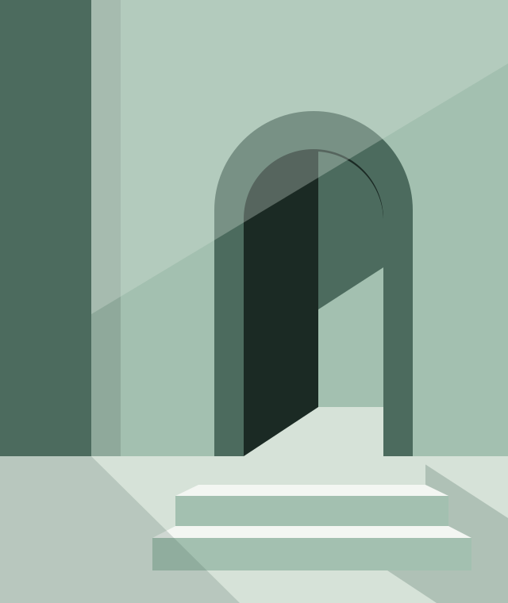

A quieter kind of website
Less noise.
More meaning.
A little space changes everything. Discover web design that lets your story breathe—and gives people a reason to stay.
Explore the possibilitiesThoughtfully made.
Deliberately uncomplicated.

The idea
Not less for the sake of less.
Less, for the sake of
better.
Minimalism is a decision about what deserves your attention. The right words. A well-placed image. A clear next step. Everything has a reason to be here.
For your website, that means giving your work the room it deserves. Less searching, more understanding. A design that feels like you, without getting in the way.
- 01 Space to focus
- Breathing room helps the important things stand out.
- 02 Type with character
- A distinctive voice, before you read a single word.
- 03 Purpose in every detail
- Every element helps someone find their way.
02 / Explore the possibilities
One philosophy.
Many expressions.
Quiet doesn’t have to mean the same.
Find the direction that
feels like you.
Spaces for
slower living.
Considered spaces. Natural materials.
A little closer
to what matters.
01 / Architecture & interiors
Let your work
do the talking.
Generous imagery. An editorial rhythm. A calm canvas that puts your spaces, projects, or creative work in the foreground.
- The feeling
- Grounded, open, considered
- Made for
- Architects, designers & creative studios
An original concept, made to show what’s possible. Your website would tell your own story.
03 / A quieter palette
A feeling,
in five shades.
Inspired by soft light, green leaves, and the shade beneath them. Gentle on the eye. Distinctly memorable.
04 / Make it yours
Your story.
A little more space.
A good website starts with a conversation. Put a few thoughts together and take the first step toward a more considered online home.